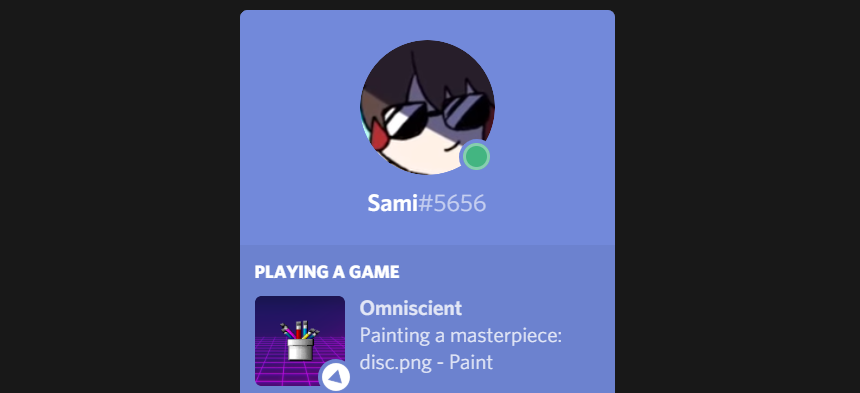
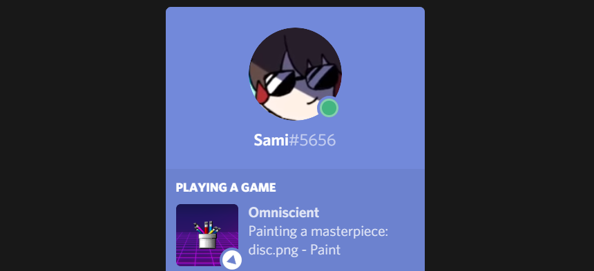

Omniscient Rich Presence
Omniscient is a simple program that takes the currently active window's title and sets it as your Rich Presence on Discord.
 

You can also set a custom application name and a custom status.
Supported apps
Firefox (Nightly and Dev too), Chrome, Edge, Internet Explorer, Opera, Paint, paint.net, Inkscape, Premiere Pro, After Effects, Vegas Pro, VLC, Unity 20XX, Visual Studio, Notepad++, Steam, Discord, GIMP, Telegram, WhatsApp and Skype
Download
Requires NET Framework 4.7 - Tested only on Windows 10
Latest version: 1.3 (Pre May Update)
Suggest features, apps or report bugs
Join the Discord Server or DM me on twitter (@morelikesame) i guess.
Special thanks
Special thanks to Lachee on GitHub, Omniscient was made using their C# Discord RPC implementation.
discord-rpc-csharp on GitHub2019 Sami, @morelikesame